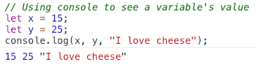
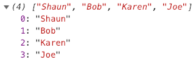
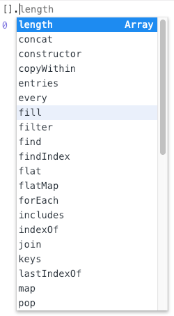

Basic Syntax Rules
Semi-colon
There are some basic syntax rules when working with JavaScript as well as some basic conventions. For example, it is important that
we terminate all statements with a
// Below are examples of statements
let x = 5;
x = x === 5 ? 10 : 5;
Assignment VS Comparison
It is important not to confuse assignment operators with comparison operators. Doing so can result in overwriting a value or a reference error.
Example: Assigning instead of comparing// Common mistake
let x = 5;
if (x = 10) {
x = 15;
}In the code above x will be equal to 15. This may seem confusing but if you follow the steps you will see what has happened here:
- Declared x and gave it the value of 5.
- Attempted to see if x is equal to 10 but instead accidentally assigned 10 to x.
- Because the evaluation doesn't explicitly equal false the condition block will execute resulting in x equalling 15.
Below is the correct way to write the code:
Example: Properly comparing// Common mistake
let x = 5;
if (x === 10) {
x = 15;
}
Commenting
Writing comments in JavaScript is quite simple. JavaScript supports single-line comments as well as multi-line comments. Below is an example of both:
// This is a single-line comment.
// So is this.
// This too.
/*
This is a multi-line
comment. Notice how it
spans across multiple
lines.
*/
/* This is also a multi-line comment. */Single-line comments are prefixed by the // syntax. Multi-line comments are wrapped using the /* and */ syntax.
Introducing Arrays
RECAP:
What is an array?
Arrays
are essentially
lists of items.
In most strict languages, these list must be the same data type. However, in JavaScript, arrays can be composed of many different types of data.
Arrays in other languages often have to be pre-declared with a set size. In JavaScript, this is unnecessary. Arrays can be various sizes and will tend to shrink and grow as the array progresses through your application.
Array Syntax in JavaScript
The syntax for arrays in JavaScript is similar to the syntax in many other languages:
Example: Array Syntax Examples// Array syntax
let names = ["Shaun", "Bob", "Dave"];
// Accessing an element
return names[0]; // outputs "Shaun"
return names[2]; // outputs "Dave"Arrays are zero-indexed meaning if want to access the first item in the array you have to use [0]. This is common in most languages and hopefully shouldn't be new.
Practice: Let's create our first JavaScript Array
// Step 1: Assign the provide variable a 3 item array.
// Make all 3 items favourite foods.
// Step 2: Access the first item in the array
// Step 3: Access the last item in the array
The Mighty Console
The JavaScript console is a way for us to debug our code and review output. The console is tremendously powerful and crucial to being a good JavaScript developer. In order to output informationt to the console, we must learn an important command: console.log
Below are some code examples. All the major browsers have consoles available to them, though they may have a variety of ways to open them.
Opening Consoles:| Browser | Shortcut Windows | Shortcut Mac | Menu Path |
|---|---|---|---|
| Chrome | F12 or Ctrl+Shift+J | CMD+Shift+J | More Tools > Developer Tools then select console |
| Firefox | F12 or Ctrl+Shift+I then select console | CMD+Shift+J | Web Developer > Toggle Tools then select console |
| Edge | F12 or Ctrl+Shift+I then select console | N/A | |
| Safari | N/A | Preferences > Advanced then enable "Show Developer Menu in Menu Bar" THEN Develop > Show Web Inspector then select console |
// Using console to see a variable's value
let x = 15;
console.log(x);
// Using console to see a variable's value
let x = 15;
let y = 25;
console.log(x, y, "I love cheese");
The console provides more information than just values. It can be interactive and allow us to explore a particular structure. For example if we output an array's value we can use the controls next to the array to view its items:
Example:// Using console to see an array's list items
let names = ["Shaun", "Bob", "Karen", "Joe"];
console.log(names);
When we get into more advanced concepts, you will quickly see how powerful the console.log can become!
Practice: Let's work in the console a little
// Step 4: Open your console and copy and paste the
// the message into the provided variable (NOTE: Computers
// are literal, so copy&paste so you don't have a syntax error):
// Step 5: Using the console.log syntax, output the
// value of 'mySecretVar', and copy and paste the
// the value in the following variable:
// Step 6: Using the console.log, output the
// array value 'mySecretArr'. Record how many
// elements there are in the following variable:
Nested Arrays
Nested arrays are simply arrays used as values in another array. Nested arrays are common and can be sometimes difficult to work with as they often require nested iterations in order to work with the data. That being said, it is important to be able to recognize a nested array, and access the data within a nested array.
Below is an example of a nested array. The idea here is that we're storing 3 students; we're using nested arrays to keep our data types separate and taking advantage of the array indexes to put them back together.
Example: Nested array syntax and access\// Nested array syntax
let students = [
[56789, 56790, 56791],
["Dave", "Bob", "Sally"],
["Smith", "Alto", "Struthers"],
[
["math", "science", "english"],
["french", "science", "geography"],
["music", "communications", "english"],
],
[
[96, 53, 85],
[76, 83, 82],
[98, 21, 56],
]
];
// Accessing Sally's info
let studentID = students[0][2];
let studentName = students[1][2] + " " + students[2][2];
let studentCourse1 = students[3][2][0];
let studentCourseGrade1 = students[4][2][0];In the above example you can see why arrays aren't necessarily the best for this type of data, but this is exactly how most tabular data is stored. The main difficulty with this is if we have a student that needs to be added in before Sally, or perhaps after Dave. We would have to keep track of their index and write large algorithms to process changes like that.
But what's the fun in having this structure if we don't at least challenge you to access some data from it:
Practice: Let's access some data from the nested array
// Step 7: Access and store Dave's science grade.
// Step 8: Access and store Bob's last name.
// Step 9: Access and store Bob's geography grade.
Adding/Removing Array Items
EVERYTHINGs An Object...😕
This is a bizarre learning path, but it is important to understand a basic JavaScript concept:
I'm going to use the terminology
properties to describe values in an object
and
methods to describe functions in an object.
This may seem like a no-brainer, but for absolute transparency
objects in JavaScript only have properties,
BUT,
properties can have any value including the value of a
Size Matters...Array Lengths!
Knowing how many items (elements) are in an array is an important concept, especially when working with dynamically sizable arrays. The reason it's valuable is because often we want to validate the array has content, that the array has a range of items, or we want to
As said before, most things in JavaScript are objects, and that applies to arrays. This means that array values have properties and methods available to us. If we want to quickly see a list of those methods, we can simply begin typing []. in our console and we will see a hint list of properties and methods available to the array object
As I said before, knowing how many elements an array has can be handy especially when we want to loop over them. We can use a handy property to access the array size known as length.
Example: Accessing an array sizelet myArr = ["Bob", "Sally", "Dave"];
let myArrSize = myArr.length; // 3The above variable, myArrSize, will have the value of 3. .length is handy, but limited. It will only tell you the shallow length of an array. This means it won't count nested array elements. Let's test this:
Practice: Record the appropriate number of elements
// Step 10: Using .length, how many elements does the
// 'students' array have?
// Step 11: Using .length, how many elements does the
// 'students' first names array have?
// Step 12: Using .length, how many elements does the
// 'students' course list array have?
Adding Elements to an Array
Like the property .length, arrays also provide methods for adding and removing elements from an array. Being able to add elements to an array is what makes our arrays dynamically sizable. We have 2 common ways for adding elements to our array:
Example: Adding elements to the end of an array using .push()let myArr = ["Shaun", "Dave", "Sally"];
\// Adding 1 new element
myArr.push("George");
\// Adding multiple new elements
myArr.push("Tommy", "Murray", "Esmerelda");
\// Results: ["Shaun", "Dave", "Sally", "George", "Tommy", "Murray", "Esmerelda"].push() adds new elements to the end of an array. It accepts a list of items that will be pushed on as a new array elements.
Example: Adding elements to the beginning of an array using .unshift()
let myArr = ["Shaun", "Dave", "Sally"];
\// Adding 1 new element
myArr.unshift("George");
\// Adding multiple new elements
myArr.unshift("Tommy", "Murray", "Esmerelda");
\// Results: ["Tommy", "Murray", "Esmerelda", "George", "Shaun", "Dave", "Sally"].unshift() adds new elements to the beginning of an array. It accepts a list of items that will be added.
Removing Elements from an Array
If we can add elements, obviously we need to be able to remove elements:
Example: Removing elements from the end of an array using .pop()let myArr = ["Shaun", "Dave", "Sally"];
\// Adding 1 new element
myArr.pop(); // returns "Sally"
\// Results: ["Shaun", "Dave"].pop() removes elements from the end of an array. It takes no arguments and can only remove 1 element at a time.
Example: Removing elements from the beginning of an array using .shift()
let myArr = ["Shaun", "Dave", "Sally"];
\// Adding 1 new element
myArr.shift();
\// Results: ["Dave", "Sally"].shift() removes elements from the beginning of an array. It accepts no arguments, so you can only remove one element at a time.
Adding/Removing Elements from an Array Using .splice()
.splice() is an interesting method that allows you to add or remove elements from an array at any point in the array. For example, adding a new element to an array between the first 2 elements:
Example: Adding new element between "Shaun" and "Dave"let myArr = ["Shaun", "Dave", "Sally"];
\// Adds "Frank" inbetween "Shaun" & "Dave"
myArr.splice(1, 0, "Frank");
\// Results: ["Shaun", "Frank", "Dave", "Sally"]Adding and Removing Elements Practice
Below are some practice steps interacting with adding and removing elements using .pop(), .push, .unshift(), .shift(), and .splice():
Practice: Let's add/remove items
let initArr = [1, 2, 3];
// Step 13: Using .push(), add the following 3 numbers
// to the array: 4, 5, and 6.
// Step 14: Using .unshift(), add the following 2 numbers
// to the array: 7, 8.
// Step 15: Using .pop(), remove the last number from the
// array.
// Step 16: Using .shift(), remove the first number from
// the array
// Step 17: Using .splice(), add the number 256 between
// 2 and 3
Loops/Iteratives/Repetition Structures
While/Do While Loops
Repetition structures (loops) are a huge part to efficient programming. There isn't a reason to repeat a process over and over again by copying and pasting code blocks. Loops help with readability and code efficiency.
while/do while loops are generally used when we want to iterate an unknown amount of times. We don't generally use these when we're iterating over items in a list or a predefined data structure. while/do while are used heavily in game development as they make up the famous game loop. This is a loop that iterates infinitely and performs actions during each iteration to update player location, scores, graphics, and any other game logic that needs to be evaluated.
Example: while loop syntax// A sentinel variable to allow us to exit
// at the correct time
let sentinel = 0;
while (sentinel < 10) {
sentinel += 1;
}
// sentinel is equal to 10The above code will iterate 10 times, adding 1 to sentinel each time. while loops only execute if the condition they're evaluating is true. As soon as it fails, they exit their block and move on.
Example: do while loop syntaxlet sentinel = 10;
do {
sentinel += 1;
} while (sentinel < 10);
// sentinel is equal to 11The above code will iterate once even though the condition is false. That's what do is instructing the interpreter. It basically says "do the following code, check the condition, then do the code again unless the condition is false."
Practice: while and do while loops
// Step 18: Write a while loop that increments the
// sentinel 8 times
let sentinel = 0;
while (sentinel < 8) {
sentinel += 1;
}
// Step 19: Write a do while loop that increments the
// sentinel 2 more times
do {
sentinel += 1;
} while (sentinel < 10)For Loops
for loops are used primarily for a fixed number of iterations. When we know (or can calculate) the number of loops needed to complete our logic, then for loops are the best choice. They are also our tool of choice when iterating over a list of elements and performing operations on each item.
Example: for loop syntaxlet nums = [];
// Common for loop syntax
for (let i = 0; i < 10; i++) {
nums.push(i);
}
// Result: [0, 1, 2, 3, 4, 5, 6, 7, 8, 9]The above code will iterate 10 times, each time adding the value of i to the nums array. The structure for a for loop is as follows:
Sometimes you may see this structure written differently as some of the arguments are optional. The above is the most common way it's written.
Practice: for loops
// Step 20: Write a for loop that adds 0 to 10 together
let forLoopValue = 0;
for (let i = 0; i <= 10; i++) {
forLoopValue += i;
}Array Loops
Arrays in JavaScript have special loop structures just for them. The for/of loop is a human-readable way to iterate over items in the array list and perform operations on each specific element. Objects also have their own special loop. These loop structures were introduced in ES5 and have become integral to clean readable JavaScript programming.
Example: for loop array iteration syntax
let myArr = [2, 3, 4, 5];
for (let i = 0; i < myArr.length; i++) {
console.log(myArr[i]);
}
// Will output each element's value
The above code illustrates how to iterate over an array and access each element. Notice the use of .length. This helps us set how many times we want to iterate.
Example: for/of loop array iteration syntax
let myArr = [2, 3, 4, 5];
for (let ele of myArr) {
console.log(ele);
}
// Will output each element's value
The above code makes use of the ES5 for/of loop structure. This syntax makes it a lot easier to work with arrays as it eliminates the need to count the array.
Practice: for and for/of loop array iteration syntax
// Step 21: Write a for/of loop that adds all
// the values together
let forOfLoopValue = 0;
let exArr = [1, 2, 3, 4, 5, 6, 7, 8, 9, 10];
for (let ele of exArr) {
forOfLoopValue += ele;
}